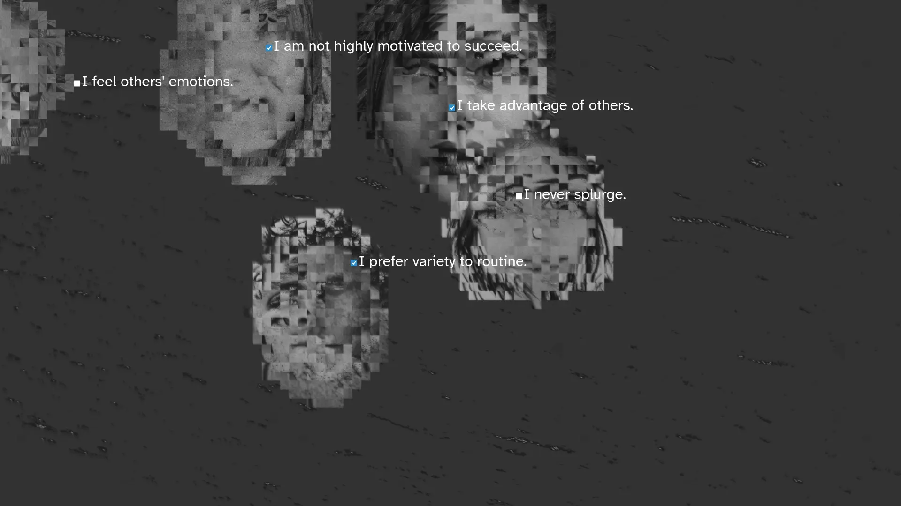
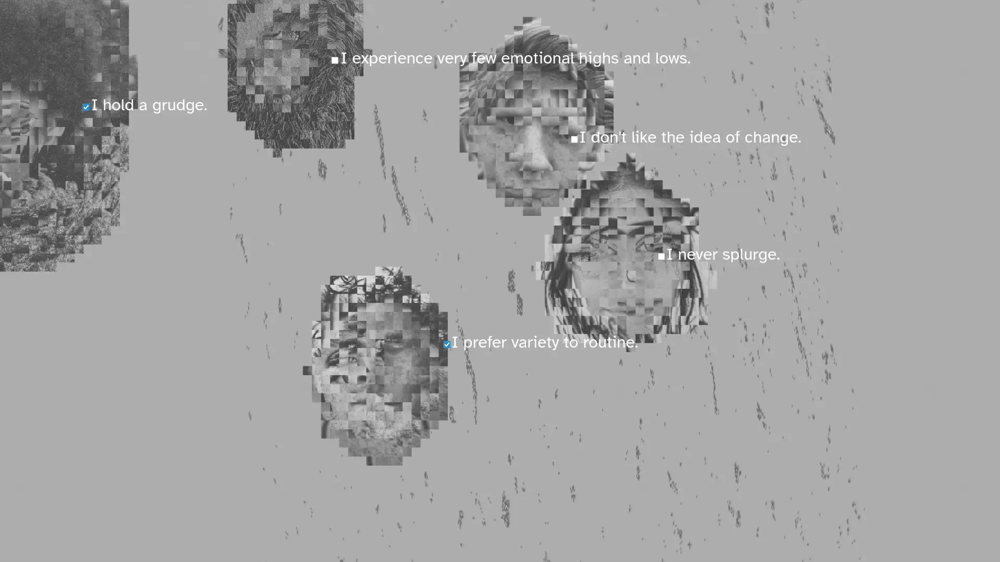
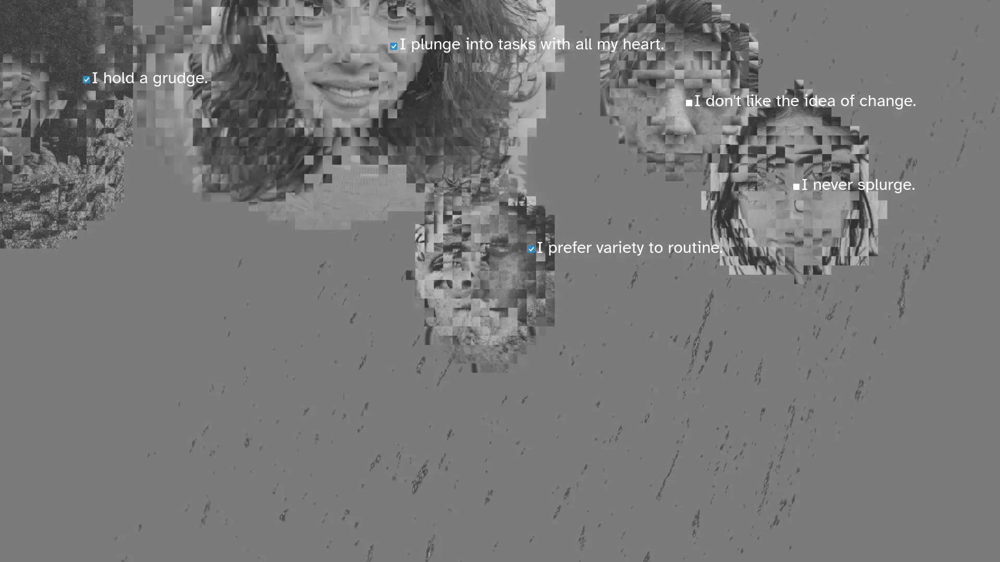
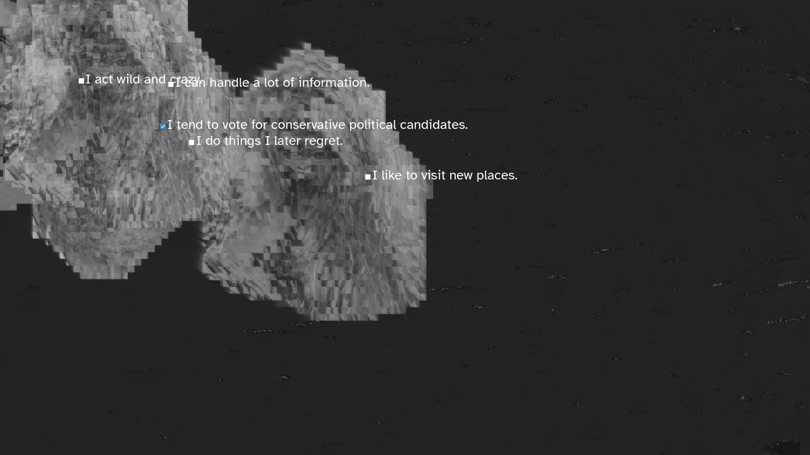

Lee Tusman
↩ Everyday
<
>
Title: I Act Comfortably With Others
Year: 2025
Medium: Digital sketch in browser, p5.js (Javascript), sound. Infinite duration.
URL: comfortably↩
Exhibited: LOVE.exe exhibit at New Media Artspace August 18 - September 30, 2025.
Description:
In I Act Comfortably With Others distorted figures drift across the screen, each one carrying a constellation of invisible needs, traumas, desires, and hopes. Floating checkboxes accompany them - diagnostic frameworks we use to categorize, assess, and define mental state and identity. The sketch visualizes the complex interplay between individuals and the systems that seek to quantify their experiences. The figures move randomly, occasionally intersecting with one another, their trajectories influenced by invisible forces: vulnerability, curiosity, compassion, or avoidance.
The software was written in p5.js. Sound performed/recorded on modular synth.




 ©opyleft
©opyleft